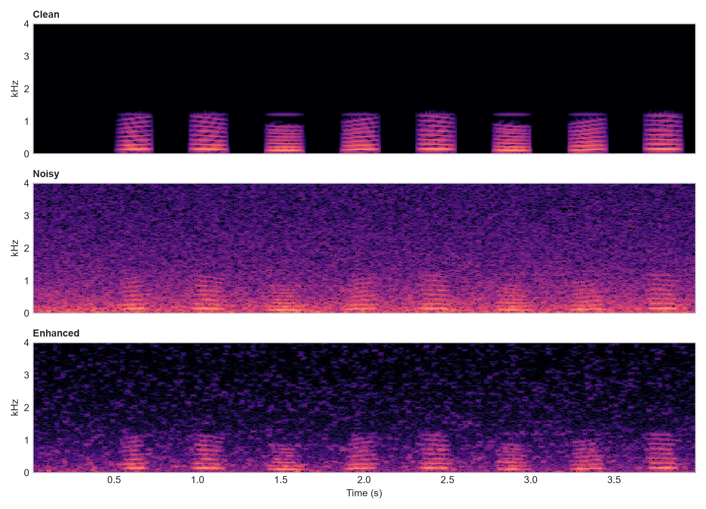

Signal-processing pipeline
What the project evaluates
The study will vary input SNR, noise type, the over-subtraction factor alpha, the spectral floor beta, and gain smoothing. Evaluation will combine SNR-based measures, runtime, spectrograms, audio examples, and optional STOI/PESQ measures. The current figures are a deterministic synthetic proof of concept, not a final real-speech result.

Reproduce the demo
Install the Python requirements, then run python scripts/run_demo.py. The repository records parameters, generated WAV files, figures, and objective metrics under results/.
AI use declaration
Generative AI tools (OpenAI ChatGPT and Codex) assisted with project planning, organising the literature search, drafting, Python implementation, debugging, documentation, and document formatting. All AI-assisted material was reviewed and revised by the student; references, code, tests, and outputs were checked locally. The student remains responsible for the final submission. The preliminary 5.73 dB SNR improvement comes from the repository's deterministic local experiment and is not an AI-generated result or a claim about real-speech performance.